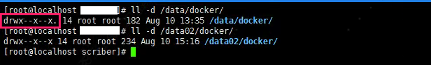

这里主要是为了记录在使用 Docker 的时候遇到的问题及其处理解决方法。


1. Docker 迁移存储目录
默认情况系统会将 Docker 容器存放在 /var/lib/docker 目录下
[问题起因] 今天通过监控系统，发现公司其中一台服务器的磁盘快慢，随即上去看了下，发现
/var/lib/docker这个目录特别大。由上述原因，我们都知道，在/var/lib/docker中存储的都是相关于容器的存储，所以也不能随便的将其删除掉。那就准备迁移
docker的存储目录吧，或者对/var设备进行扩容来达到相同的目的。更多关于dockerd的详细参数，请点击查看 官方文档 地址。但是需要注意的一点就是，尽量不要用软链， 因为一些
docker容器编排系统不支持这样做，比如我们所熟知的k8s就在内。
# 发现容器启动不了了
ERROR：cannot create temporary directory!
# 查看系统存储情况
$ du -h --max-depth=1
- [解决方法 1] 添加软链接
# 1.停止docker服务
$ sudo systemctl stop docker
# 2.开始迁移目录
$ sudo mv /var/lib/docker /data/
# 3.添加软链接
$ sudo ln -s /data/docker /var/lib/docker
# 4.启动docker服务
$ sudo systemctl start docker
- [解决方法 2] 改动 docker 配置文件
# [方式一] 改动docker启动配置文件
$ sudo vim /lib/systemd/system/docker.service
ExecStart=/usr/bin/dockerd --graph=/data/docker/
# [方式二] 改动docker启动配置文件
$ sudo vim /etc/docker/daemon.json
{
"live-restore": true,
"graph": [ "/data/docker/" ]
}
- [操作注意事项] 在迁移
docker目录的时候注意使用的命令，要么使用mv命令直接移动，要么使用cp命令复制文件，但是需要注意同时复制文件权限和对应属性，不然在使用的时候可能会存在权限问题。如果容器中，也是使用root用户，则不会存在该问题，但是也是需要按照正确的操作来迁移目录。
# 使用mv命令
$ sudo mv /var/lib/docker /data/docker
# 使用cp命令
$ sudo cp -arv /data/docker /data2/docker
- 下图中，就是因为启动的容器使用的是普通用户运行进程的，且在运行当中需要使用
/tmp目录，结果提示没有权限。在我们导入容器镜像的时候，其实是会将容器启动时需要的各个目录的权限和属性都赋予了。如果我们直接是cp命令单纯复制文件内容的话，就会出现属性不一致的情况，同时还会有一定的安全问题。

2. Docker 设备空间不足
- [问题起因一] 容器在导入或者启动的时候，如果提示磁盘空间不足的，那么多半是真的因为物理磁盘空间真的有问题导致的。如下所示，我们可以看到
/分区确实满了。
# 查看物理磁盘空间
$ df -Th
Filesystem Size Used Avail Use% Mounted on
/dev/vda1 40G 40G 0G 100% /
tmpfs 7.8G 0 7.8G 0% /dev/shm
/dev/vdb1 493G 289G 179G 62% /mnt
- 如果发现真的是物理磁盘空间满了的话，就需要查看到底是什么占据了如此大的空间，导致因为容器没有空间无法启动。其中，
docker自带的命令就是一个很好的能够帮助我们发现问题的工具。
# 查看基本信息
# 硬件驱动使用的是devicemapper，空间池为docker-252
# 磁盘可用容量仅剩16.78MB，可用供我们使用
$ docker info
Containers: 1
Images: 28
Storage Driver: devicemapper
Pool Name: docker-252:1-787932-pool
Pool Blocksize: 65.54 kB
Backing Filesystem: extfs
Data file: /dev/loop0
Metadata file: /dev/loop1
Data Space Used: 1.225 GB
Data Space Total: 107.4 GB
Data Space Available: 16.78 MB
Metadata Space Used: 2.073 MB
Metadata Space Total: 2.147 GB
- [解决方法] 通过查看信息，我们知道正是因为
docker可用的磁盘空间不足，所以导致启动的时候没有足够的空间进行加载启动镜像。解决的方法也很简单，第一就是清理无效数据文件释放磁盘空间(清除日志)，第二就是修改docker数据的存放路径(大分区)。
# 显示哪些容器目录具有最大的日志文件
$ du -d1 -h /var/lib/docker/containers | sort -h
# 清除您选择的容器日志文件的内容
$ cat /dev/null > /var/lib/docker/containers/container_id/container_log_name
[问题起因二] 显然我遇到的不是上一种情况，而是在启动容器的时候，容器启动之后不久就显示是
unhealthy的状态，通过如下日志发现，原来是复制配置文件启动的时候，提示磁盘空间不足。后面发现是因为
CentOS7的系统使用的docker容器默认的创建大小就是10G而已，然而我们使用的容器却超过了这个限制，导致无法启动时提示空间不足。
2019-08-16 11:11:15,816 INFO spawned: 'app-demo' with pid 835
2019-08-16 11:11:16,268 INFO exited: app (exit status 1; not expected)
2019-08-16 11:11:17,270 INFO gave up: app entered FATAL state, too many start retries too quickly
cp: cannot create regular file '/etc/supervisor/conf.d/grpc-app-demo.conf': No space left on device
cp: cannot create regular file '/etc/supervisor/conf.d/grpc-app-demo.conf': No space left on device
cp: cannot create regular file '/etc/supervisor/conf.d/grpc-app-demo.conf': No space left on device
cp: cannot create regular file '/etc/supervisor/conf.d/grpc-app-demo.conf': No space left on device
- [解决方法 1] 改动 docker 启动配置文件
# /etc/docker/daemon.json
{
"live-restore": true,
"storage-opt": [ "dm.basesize=20G" ]
}
- [解决方法 2] 改动 systemctl 的 docker 启动文件
# 1.stop the docker service
$ sudo systemctl stop docker
# 2.rm exised container
$ sudo rm -rf /var/lib/docker
# 2.edit your docker service file
$ sudo vim /usr/lib/systemd/system/docker.service
# 3.find the execution line
ExecStart=/usr/bin/dockerd
and change it to:
ExecStart=/usr/bin/dockerd --storage-opt dm.basesize=20G
# 4.start docker service again
$ sudo systemctl start docker
# 5.reload daemon
$ sudo systemctl daemon-reload
- [问题起因三] 还有一种情况也会让容器无法启动，并提示磁盘空间不足，但是使用命令查看发现并不是因为物理磁盘真的不足导致的。而是，因为对于分区的
inode节点数满了导致的。
# 报错信息
No space left on device
- [解决方法] 因为
ext3文件系统使用inode table存储inode信息，而xfs文件系统使用B+ tree来进行存储。考虑到性能问题，默认情况下这个B+ tree只会使用前1TB空间，当这1TB空间被写满后，就会导致无法写入inode信息，报磁盘空间不足的错误。我们可以在mount时，指定inode64即可将这个B+ tree使用的空间扩展到整个文件系统。
# 查看系统的inode节点使用情况
$ sudo df -i
# 尝试重新挂载
$ sudo mount -o remount -o noatime,nodiratime,inode64,nobarrier /dev/vda1
[补充知识] 文件储存在硬盘上，硬盘的最小存储单位叫做 扇区(
Sector)。每个扇区储存512字节(相当于0.5KB)。操作系统读取硬盘的时候，不会一个个扇区地读取，这样效率太低，而是一次性连续读取多个扇区，即一次性读取一个块(block)。这种由多个扇区组成的块，是文件存取的最小单位。块的大小，最常见的是4KB，即连续八个sector组成一个block块。文件数据都储存在块中，那么很显然，我们还必须找到一个地方储存文件的元信息，比如文件的创建者、文件的创建日期、文件的大小等等。这种储存文件元信息的区域就叫做索引节点(inode)。每一个文件都有对应的inode，里面包含了除了文件名以外的所有文件信息。inode也会消耗硬盘空间，所以硬盘格式化的时候，操作系统自动将硬盘分成两个区域。一个是数据区，存放文件数据；另一个是inode区(inode table)，存放inode所包含的信息。每个inode节点的大小，一般是128字节或256字节。inode节点的总数，在格式化时就给定，一般是每1KB或每2KB就设置一个inode节点。
# 每个节点信息的内容
$ stat check_port_live.sh
File: check_port_live.sh
Size: 225 Blocks: 8 IO Block: 4096 regular file
Device: 822h/2082d Inode: 99621663 Links: 1
Access: (0755/-rwxr-xr-x) Uid: ( 1006/ escape) Gid: ( 1006/ escape)
Access: 2019-07-29 14:59:59.498076903 +0800
Modify: 2019-07-29 14:59:59.498076903 +0800
Change: 2019-07-29 23:20:27.834866649 +0800
Birth: -
# 磁盘的inode使用情况
$ df -i
Filesystem Inodes IUsed IFree IUse% Mounted on
udev 16478355 801 16477554 1% /dev
tmpfs 16487639 2521 16485118 1% /run
/dev/sdc2 244162560 4788436 239374124 2% /
tmpfs 16487639 5 16487634 1% /dev/shm
3. Docker 缺共享链接库
Docker 命令需要对/tmp 目录下面有访问权限
- [问题起因] 给系统安装完
compose之后，查看版本的时候，提示缺少一个名为libz.so.1的共享链接库。第一反应就是，是不是系统少安装那个软件包导致的。随即，搜索了一下，将相关的依赖包都给安装了，却还是提示同样的问题。
# 提示错误信息
$ docker-compose --version
error while loading shared libraries: libz.so.1: failed to map segment from shared object: Operation not permitted
- [解决方法] 后来发现，是因为系统中
docker没有对/tmp目录的访问权限导致，需要重新将其挂载一次，就可以解决了。
# 重新挂载
$ sudo mount /tmp -o remount,exec
4. Docker 容器文件损坏
对 dockerd 的配置有可能会影响到系统稳定
- [问题起因] 容器文件损坏，经常会导致容器无法操作。正常的
docker命令已经无法操控这台容器了，无法关闭、重启、删除。正巧，前天就需要这个的问题，主要的原因是因为重新对docker的默认容器进行了重新的分配限制导致的。
# 操作容器遇到类似的错误
b'devicemapper: Error running deviceCreate (CreateSnapDeviceRaw) dm_task_run failed'
- [解决方法] 可以通过以下操作将容器删除/重建。
# 1.关闭docker
$ sudo systemctl stop docker
# 2.删除容器文件
$ sudo rm -rf /var/lib/docker/containers
# 3.重新整理容器元数据
$ sudo thin_check /var/lib/docker/devicemapper/devicemapper/metadata
$ sudo thin_check --clear-needs-check-flag /var/lib/docker/devicemapper/devicemapper/metadata
# 4.重启docker
$ sudo systemctl start docker
5. Docker 容器优雅重启
不停止服务器上面运行的容器，重启 dockerd 服务是多么好的一件事
- [问题起因] 默认情况下，当
Docker守护程序终止时，它会关闭正在运行的容器。从Docker-ce 1.12开始，可以在配置文件中添加live-restore参数，以便在守护程序变得不可用时容器保持运行。需要注意的是Windows平台暂时还是不支持该参数的配置。
# Keep containers alive during daemon downtime
$ sudo vim /etc/docker/daemon.yaml
{
"live-restore": true
}
# 在守护进程停机期间保持容器存活
$ sudo dockerd --live-restore
# 只能使用reload重载
# 相当于发送SIGHUP信号量给dockerd守护进程
$ sudo systemctl reload docker
# 但是对应网络的设置需要restart才能生效
$ sudo systemctl restart docker
- [解决方法] 可以通过以下操作将容器删除/重建。
# /etc/docker/daemon.yaml
{
"registry-mirrors": ["https://vec0xydj.mirror.aliyuncs.com"], # 配置获取官方镜像的仓库地址
"experimental": true, # 启用实验功能
"default-runtime": "nvidia", # 容器的默认OCI运行时(默认为runc)
"live-restore": true, # 重启dockerd服务的时候容易不终止
"runtimes": { # 配置容器运行时
"nvidia": {
"path": "/usr/bin/nvidia-container-runtime",
"runtimeArgs": []
}
},
"default-address-pools": [ # 配置容器使用的子网地址池
{
"scope": "local",
"base":"172.17.0.0/12",
"size":24
}
]
}
$ vim /etc/docker/daemon.json
{
"default-address-pools" : [
{
"base" : "172.240.0.0/16",
"size" : 24
}
]
}
6. Docker 容器无法删除
找不到对应容器进程是最吓人的
- [问题起因] 今天遇到
docker容器无法停止/终止/删除，以为这个容器可能又出现了dockerd守护进程托管的情况，但是通过ps -ef <container id>无法查到对应的运行进程。哎，后来开始开始查supervisor以及Dockerfile中的进程，都没有。这种情况的可能原因是容器启动之后，主机因任何原因重新启动并且没有优雅地终止容器。剩下的文件现在阻止你重新生成旧名称的新容器，因为系统认为旧容器仍然存在。
# 删除容器
$ sudo docker rm -f f8e8c3..
Error response from daemon: Conflict, cannot remove the default name of the container
- [解决方法] 找到
/var/lib/docker/containers/下的对应容器的文件夹，将其删除，然后重启一下dockerd即可。我们会发现，之前无法删除的容器没有了。
# 删除容器文件
$ sudo rm -rf /var/lib/docker/containers/f8e8c3...65720
# 重启服务
$ sudo systemctl restart docker.service
7. Docker 容器中文异常
容器存在问题话，记得优先在官网查询
- [问题起因] 今天登陆之前部署的
MySQL数据库查询，发现使用SQL语句无法查询中文字段，即使直接输入中文都没有办法显示。
# 查看容器支持的字符集
root@b18f56aa1e15:# locale -a
C
C.UTF-8
POSIX
- [解决方法]
Docker部署的MySQL系统使用的是POSIX字符集。然而POSIX字符集是不支持中文的，而C.UTF-8是支持中文的只要把系统中的环境LANG改为"C.UTF-8"格式即可解决问题。同理，在K8S进入pod不能输入中文也可用此方法解决。
# 临时解决
docker exec -it some-mysql env LANG=C.UTF-8 /bin/bash
# 永久解决
docker run --name some-mysql \
-e MYSQL_ROOT_PASSWORD=my-secret-pw \
-d mysql:tag --character-set-server=utf8mb4 \
--collation-server=utf8mb4_unicode_ci
8. Docker 容器网络互通
了解 Docker 的四种网络模型
- [问题起因] 在本机部署
Nginx容器想代理本机启动的Python后端服务程序，但是对代码服务如下的配置，结果访问的时候一直提示502错误。
# 启动Nginx服务
$ docker run -d -p 80:80 $PWD:/etc/nginx nginx
server {
...
location /api {
proxy_pass http://localhost:8080
}
...
}
[解决方法] 后面发现是因为
nginx.conf配置文件中的localhost配置的有问题，由于Nginx是在容器中运行，所以localhost为容器中的localhost，而非本机的localhost，所以导致无法访问。可以将
nginx.conf中的localhost改为宿主机的IP地址，就可以解决502的错误。
# 查询宿主机IP地址 => 172.17.0.1
$ ip addr show docker0
docker0: <BROADCAST,MULTICAST,UP,LOWER_UP> mtu 1500 qdisc noqueue state UP group default
link/ether 02:42:d5:4c:f2:1e brd ff:ff:ff:ff:ff:ff
inet 172.17.0.1/16 scope global docker0
valid_lft forever preferred_lft forever
inet6 fe80::42:d5ff:fe4c:f21e/64 scope link
valid_lft forever preferred_lft forever
server {
...
location /api {
proxy_pass http://172.17.0.1:8080
}
...
}
- 当容器使用
host网络时，容器与宿主共用网络，这样就能在容器中访问宿主机网络，那么容器的localhost就是宿主机的localhost了。
# 服务的启动方式有所改变(没有映射出来端口)
# 因为本身与宿主机共用了网络，宿主机暴露端口等同于容器中暴露端口
$ docker run -d -p 80:80 --network=host $PWD:/etc/nginx nginxx
9. Docker 容器总线错误
总线错误看到的时候还是挺吓人了
- [问题起因] 在
docker容器中运行程序的时候，提示bus error错误。
# 总线报错
$ inv app.user_op --name=zhangsan
Bus error (core dumped)
- [解决方法] 原因是在
docker运行的时候，shm分区设置太小导致share memory不够。不设置--shm-size参数时，docker给容器默认分配的shm大小为64M，导致程序启动时不足。具体原因还是因为安装pytorch包导致了，多进程跑任务的时候，docker容器分配的共享内存太小，导致torch要在tmpfs上面放模型数据用于子线程的 共享不足，就出现报错了。
# 问题原因
root@18...35:/opt/app# df -TH
Filesystem Type Size Used Avail Use% Mounted on
overlay overlay 2.0T 221G 1.4T 3% /
tmpfs tmpfs 68M 0 68M 0% /dev
shm tmpfs 68M 41k 68M 1% /dev/shm
# 启动docker的时候加上--shm-size参数(单位为b,k,m或g)
$ docker run -it --rm --shm-size=200m pytorch/pytorch:latest
# 在docker-compose添加对应配置
$ shm_size: '2gb'
- [解决方法] 还有一种情况就是容器内的磁盘空间不足，也会导致
bus error这样的报错，所以如果出现了，清除多余文件和目录或者分配一个大的磁盘空间，就可以解决了。
# 磁盘空间不足
$ df -Th
Filesystem Type Size Used Avail Use% Mounted on
overlay overlay 1T 1T 0G 100% /
shm tmpfs 64M 24K 64M 1% /dev/shm
10. Docker NFS 挂载报错
NFS 挂载之后容器程序使用异常为内核版本太低导致的
- [问题起因] 我们将服务部署到
openshift集群中，启动服务调用资源文件的时候，报错信息如下所示。从报错信息中，得知是在Python3程序执行read_file()读取文件的内容，给文件加锁的时候报错了。但是奇怪的是，本地调试的时候发现服务都是可以正常运行的，文件加锁也是没问题的。后来发现，在openshift集群中使用的是NFS挂载的共享磁盘。
# 报错信息
Traceback (most recent call last):
......
File "xxx/utils/storage.py", line 34, in xxx.utils.storage.LocalStorage.read_file
OSError: [Errno 9] Bad file descriptor
# 文件加锁代码
...
with open(self.mount(path), 'rb') as fileobj:
fcntl.flock(fileobj, fcntl.LOCK_EX)
data = fileobj.read()
return data
...
- [解决方法] 从下面的信息得知，要在
Linux中使用flock()的话，就需要升级内核版本到2.6.11+才行。后来才发现，这实际上是由RedHat內核中的一个错误引起的，并在kernel-3.10.0-693.18.1.el7版本中得到修复。 所以对于NFSv3和NFSv4服务而已，就需要升级Linux内核版本才能够解决这个问题。
# https://t.codebug.vip/questions-930901.htm
$ In Linux kernels up to 2.6.11, flock() does not lock files over NFS (i.e.,
the scope of locks was limited to the local system). [...] Since Linux 2.6.12,
NFS clients support flock() locks by emulating them as byte-range locks on the entire file.
11. Docker 使用默认网段
启动的容器网络无法相互通信，很是奇怪！
- [问题起因] 我们在使用
Docker启动服务的时候，发现有时候服务之前可以相互连通，而有时启动的多个服务之前却出现了无法访问的情况。究其原因，发现原来是因为使用的内部私有地址网段不一致导致的。有的服务启动到了172.17 - 172.31的网段，有的服务跑到了192.169.0 - 192.168.224的网段，这样导致服务启动之后出现无法访问的情况(默认情况下，有下面这个两个网段可供其使用)。
- [解决方法] 上述问题的处理方式，就是手动指定
Docker服务的启动网段，二选一就可以了。
# 查看docker容器配置
$ cat /etc/docker/daemon.json
{
"registry-mirrors": ["https://vec0xydj.mirror.aliyuncs.com"],
"default-address-pools":[{"base":"172.17.0.0/12", "size":24}],
"experimental": true,
"default-runtime": "nvidia",
"live-restore": true,
"runtimes": {
"nvidia": {
"path": "/usr/bin/nvidia-container-runtime",
"runtimeArgs": []
}
}
}
12. Docker 服务启动串台
使用 docker-compose 命令各自启动两组服务，发现服务会串台！
- [问题起因] 在两个不同名称的目录目录下面，使用
docker-compose来启动服务，发现当A组服务启动完毕之后，再启动B组服务的时候，发现A组当中对应的一部分服务又重新启动了一次，这就非常奇怪了！因为这个问题的存在会导致，A组服务和B组服务无法同时启动。之前还以为是工具的Bug，后来请教了 “上峰”，才知道了原因，恍然大悟。
# 服务目录结构如下所示
A: /data1/app/docker-compose.yml
B: /data2/app/docker-compose.yml
- [解决方法] 发现
A和B两组服务会串台的原因，原来是docker-compose会给启动的容器加label标签，然后根据这些label标签来识别和判断对应的容器服务是由谁启动的、谁来管理的，等等。而这里，我们需要关注的label变量是com.docker.compose.project，其对应的值是使用启动配置文件的目录的最底层子目录名称，即上面的app就是对应的值。我们可以发现，A和B两组服务对应的值都是app，所以启动的时候被认为是同一个，这就出现了上述的问题。如果需要深入了解的话，可以去看对应源代码。
# 可以将目录结构调整为如下所示
A: /data/app1/docker-compose.yml
B: /data/app2/docker-compose.yml
A: /data1/app-old/docker-compose.yml
B: /data2/app-new/docker-compose.yml
- 或者使用
docker-compose命令提供的参数-p手动指定标签，来规避该问题的发生。
# 指定项目项目名称
$ docker-compose -f ./docker-compose.yml -p app1 up -d
13. Docker 命令调用报错
在编写脚本的时候常常会执行 docker 相关的命令，但是需要注意使用细节！
- [问题起因]
CI更新环境执行了一个脚本，但是脚本执行过程中报错了，如下所示。通过对应的输出信息，可以看到提示说正在执行的设备不是一个tty。
- 随即，查看了脚本发现报错地方是执行了一个
exec的docker命令，大致如下所示。很奇怪的是，手动执行或直接调脚本的时候，怎么都是没有问题的，但是等到CI调用的时候怎么都是有问题。后来好好看下，下面这个命令，注意到-it这个参数了。
# 脚本调用docker命令
docker exec -it <container_name> psql -Upostgres ......
- 我们可以一起看下
exec命令的这两个参数，自然就差不多理解了。
| 编号 | 参数 | 解释说明 |
|---|---|---|
| 1 | -i/-interactive |
即使没有附加也保持 STDIN 打开；如果你需要执行命令则需要开启这个选项 |
| 2 | -t/–tty |
分配一个伪终端进行执行；一个连接用户的终端与容器 stdin 和 stdout 的桥梁 |
- [解决方法]
docker exec的参数-t是指Allocate a pseudo-TTY的意思，而CI在执行job的时候并不是在TTY终端中执行，所以-t这个参数会报错。同时在 『stackoverflow』也有人给出原因，可以自行查看。
14. Docker 定时任务异常
在 Crontab 定时任务中也存在 Docker 命令执行异常的情况！
- [问题起因] 今天发现了一个问题，就是在备份
Mysql数据库的时候，使用docker容器进行备份，然后使用Crontab定时任务来触发备份。但是发现备份的MySQL数据库居然是空的，但是手动执行对应命令切是好的，很奇怪。
# Crontab定时任务
0 */6 * * * \
docker exec -it <container_name> sh -c \
'exec mysqldump --all-databases -uroot -ppassword ......'
- [解决方法] 后来发现是因为执行的
docker命令多个-i导致的。因为Crontab命令执行的时候，并不是交互式的，所以需要把这个去掉才可以。总结就是，如果你需要回显的话则需要-t选项，如果需要交互式会话则需要-i选项。
| 编号 | 参数 | 解释说明 |
|---|---|---|
| 1 | -i/-interactive |
即使没有附加也保持 STDIN 打开；如果你需要执行命令则需要开启这个选项 |
| 2 | -t/–tty |
分配一个伪终端进行执行；一个连接用户的终端与容器 stdin 和 stdout 的桥梁 |
15 Docker 变量使用引号
compose 里边环境变量带不带引号的问题！
[问题起因] 使用过
compose的同学可能都遇到过，我们在编写启动配置文件的时候，添加环境变量的时候到底是使用单引号、双引号还是不使用引号。时间长了，可能我们总是三者是一样的，可以相互使用。但是，直到最后我们发现坑越来越多，越来越隐晦。反正我是遇到过很多是因为添加引号导致的服务启动问题，后来得出的结论就是一律不适用引号。裸奔，体验前所未有的爽快！直到现在看到了
Github中对应的 issus 之后，才终于破案了。
# TESTVAR="test"
在Compose中进行引用TESTVAR变量，无法找到
# TESTVAR=test
在Compose中进行引用TESTVAR变量，可以找到
# docker run -it --rm -e TESTVAR="test" test:latest
后来发现docker本身其实已经正确地处理了引号的使用
- [解决方法] 得到的结论就是，因为
Compose解析yaml配置文件，发现引号也进行了解释包装。这就导致原本的TESTVAR="test"被解析成了'TESTVAR="test"'，所以我们在引用的时候就无法获取到对应的值。现在解决方法就是，不管是我们直接在配置文件添加环境变量或者使用env_file配置文件，能不使用引号就不适用引号。
16. Docker 删除镜像报错
无法删除镜像，归根到底还是有地方用到了！
- [问题起因] 清理服器磁盘空间的时候，删除某个镜像的时候提示如下信息。提示需要强制删除，但是发现及时执行了强制删除依旧没有效果。
# 删除镜像
$ docker rmi 3ccxxxx2e862
Error response from daemon: conflict: unable to delete 3ccxxxx2e862 (cannot be forced) - image has dependent child images
# 强制删除
$ dcoker rmi -f 3ccxxxx2e862
Error response from daemon: conflict: unable to delete 3ccxxxx2e862 (cannot be forced) - image has dependent child images
- [解决方法] 后来才发现，出现这个原因主要是因为
TAG，即存在其他镜像引用了这个镜像。这里我们可以使用如下命令查看对应镜像文件的依赖关系，然后根据对应TAG来删除镜像。
# 查询依赖 - image_id表示镜像名称
$ docker image inspect --format='{{.RepoTags}} {{.Id}} {{.Parent}}' $(docker image ls -q --filter since=<image_id>)
# 根据TAG删除镜像
$ docker rmi -f c565xxxxc87f
# 删除悬空镜像
$ docker rmi $(docker images --filter "dangling=true" -q --no-trunc)
17. Docker 普通用户切换
切换 Docker 启动用户的话，还是需要注意下权限问题的！
- [问题起因] 我们知道在
Docker容器里面使用root用户的话，是不安全的，很容易出现越权的安全问题，所以一般情况下，我们都会使用普通用户来代替root进行服务的启动和管理的。今天给一个服务切换用户的时候，发现Nginx服务一直无法启动，提示如下权限问题。因为对应的配置文件也没有配置var相关的目录，无奈 🤷♀ ！️
# Nginx报错信息
nginx: [alert] could not open error log file: open() "/var/log/nginx/error.log" failed (13: Permission denied)
2020/11/12 15:25:47 [emerg] 23#23: mkdir() "/var/cache/nginx/client_temp" failed (13: Permission denied)
- [解决方法] 后来发现还是
nginx.conf配置文件，配置的有问题，需要将Nginx服务启动时候需要的文件都配置到一个无权限的目录，即可解决。
user www-data;
worker_processes 1;
error_log /data/logs/master_error.log warn;
pid /dev/shm/nginx.pid;
events {
worker_connections 1024;
}
http {
include /etc/nginx/mime.types;
default_type application/octet-stream;
gzip on;
sendfile on;
tcp_nopush on;
keepalive_timeout 65;
client_body_temp_path /tmp/client_body;
fastcgi_temp_path /tmp/fastcgi_temp;
proxy_temp_path /tmp/proxy_temp;
scgi_temp_path /tmp/scgi_temp;
uwsgi_temp_path /tmp/uwsgi_temp;
include /etc/nginx/conf.d/*.conf;
}
18. Docker 绑定到 IPv6 上
Docker 服务在启动的时候，将地址绑定到 IPv6 地址上面了，提示报错信息！
- [问题起因] 物理机器更新了对应补丁之后，重启了服务，导致原本可以正常启动的
docker-compose服务提示如下报错信息。不清楚是否修改了操作系统的相关配置，还是对应docker进行的其他方面的配置，比如修改/etc/docker/daemon.json或者docker的service启动文件。
# Docker的报错信息
docker run -p 80:80 nginx:alpine succeeds. Previously, this was failing with Error \
starting userland proxy: listen tcp6 [::]:80: socket: address family not supported by protocol.
- [解决方法] 通过如上所示的报错信息，可以看到服务的启动端口绑定到了
tcp6上面了，但是对应的socket发现系统本身并不支持。这时，我们一看下对应的操作系统ipv6的设置，发现系统禁用了，所有的ipv6地址。需要了解的朋友，可以参考 fix port forwarding with ipv6.disable=1 和 cannot start if ipv6 is disabled on host 这两个issus来获取更多信息。
# 操作系统配置
$ cat /etc/sysctl.conf | grep ipv6
net.ipv6.conf.all.disable_ipv6=1
- [方法一] 最为简单的解决方法，就是在
docker-compose.yml文件中，手动指定将对应服务的端口绑定到ipv4上面，如下所示。
version: "3"
services:
app:
restart: on-failure
container_name: app_web
image: app:latest
ports:
- "0.0.0.0:80:80/tcp"
volumes:
- "./app_web:/data"
networks:
- app_network
networks:
app_network:
- [方法二] 或者修改
/etc/docker/daemon.json文件，在配置中，阻止Docker错误的将端口映射到IPv6上，即可达到同样的效果，且不用再次修改多个服务的启动配置文件了。
# 修改配置
$ vim /etc/docker/daemon.json
{
"ipv6": false,
"fixed-cidr-v6": "2001:db8:1::/64"
}
# 重启服务
$ systemctl reload docker
- [方法三]
Docker默认情况下会同时将端口映射于IPv4与IPv6两者上，而且有的时候会出现只绑定到了IPv6，导致服务无法正常访问的情况。现在通用的始终还是IPv4地址，因此最简单的做法就是关闭IPv6地址。详细的配置，可以参考 Port redirecting binding to IPv6 but not IPv4 interfaces 这个issus地址。
# 修改系统配置
echo '1' > /proc/sys/net/ipv6/conf/lo/disable_ipv6
echo '1' > /proc/sys/net/ipv6/conf/lo/disable_ipv6
echo '1' > /proc/sys/net/ipv6/conf/all/disable_ipv6
echo '1' > /proc/sys/net/ipv6/conf/default/disable_ipv6
# 重启网络
$ /etc/init.d/networking restart
# 最后检测是否已关闭IPv6
ip addr show | grep net6
19. Docker 容器启动超时
Docker 服务在启动的时候，提示超时，被直接终止了！
- [问题起因] 使用
docker-compose启动容器的时候，等待了很久的时候(大约2-3分钟左右)，之后提示如下信息。通过阅读信息内容，可以看到是因为超时导致的，提示可以通过设置环境变量，加大超时的时间。
$ docker-compose up -d
ERROR: for xxx UnixHTTPConnectionPool(host='localhost', port=None): Read timed out. (read timeout=70)
ERROR: An HTTP request took too long to complete. Retry with --verbose to obtain debug information.
If you encounter this issue regularly because of slow network conditions, consider setting COMPOSE_HTTP_TIMEOUT to a higher value (current value: 60).
- [解决方法] 按照提示设置的环境变量之后，再次启动发现确实可以正常启动了，但是还是能够感觉到有些慢。
$ sudo vim /etc/profile
export COMPOSE_HTTP_TIMEOUT=500
export DOCKER_CLIENT_TIMEOUT=500
- 排除了下启动流程，因为容器启动有映射目录到容器里面且目录大小比较大，所以怀疑是因为
i/o导致的。随即使用iotop命令查看服务器目前的i/o情况，发现存在很多个rg命令，且都处于100%左右。查了下，发现是vscode远程服务器启动的搜索目录结构的进程，西八，有些坑呀！
$ sudo iotop
4269 be/4 escape 15.64 K/s 0.00 B/s 0.00 % 98.36 % rg --files --hidden
4270 be/4 escape 28.15 K/s 0.00 B/s 0.00 % 97.46 % rg --files --hidden
4272 be/4 escape 31.27 K/s 0.00 B/s 0.00 % 97.39 % rg --files --hidden
4276 be/4 escape 34.40 K/s 0.00 B/s 0.00 % 96.98 % rg --files --hidden
20. Docker 端口网络限制
如果发现服务都一切正常，但是无法无法访问的话，则多为网络问题！
- [问题起因] 启用服务之后，登录跳转发现直接
502报错了。排除了配置等相关原因都没有任何问题(做过相关测试)，这就非常奇怪了！
# 部署服务架构
nginx(80) -> web1(8080)
-> web2(8081)
# 报错信息如下所示
nginx connect() failed (113: No route to host) while connecting to upstream
- [解决方法] 根据错误信息可知，是因为没有路由到指定的
host导致了，随即看了下防火墙是开着的，看了日志发现被过滤掉了，西八！问题找到了，现在需要做的就是，要么添加防火墙规则，要么关闭防火墙。
# 检查开放的端口
$ sudo firewall-cmd --permanent --zone=public --list-ports
# 开启需要路由的端口
$ sudo firewall-cmd --permanent --zone=public --add-port=8080/tcp
$ sudo firewall-cmd --permanent --zone=public --add-port=8081/tcp
# 配置立即生效
firewall-cmd --reload
# 关闭防火墙
$ sudo systemctl stop firewalld.service
# 禁用自启动
$ sudo systemctl disable firewalld.service
21. Docker 无法获取镜像
新初始化的机器，无法获取私有仓库的镜像文件！
- [问题起因] 机器初始化之后，使用如下命令登录私有
docker仓库，发现提示无法获取对应镜像，但是在其他机器上面获取该镜像就可以执行成功，这就非常奇怪了！
# 登录私有仓库
$ echo '123456' | docker login -u escape --password-stdin docker.escapelife.site
# 异常信息提示
$ sudo docker pull docker.escapelife.site/app:0.10
Error response from daemon: manifest for docker.escapelife.site/app:0.10 not found: manifest unknown: manifest unknown
- [解决方法] 太坑了，我还以为我发现某个隐藏的
bug了，可劲的排查，最后发现，原来是自己镜像包名字写错了，应该写成0.0.10的，自己却写成了0.10。这里，纪念一下，以后碰到上述报错，那肯定是镜像不存在的。
# 登录私有仓库之后会在用户家目录下生成一个docker配置
# 其用来记录docker私有仓库的登录认证信息(是加密过的信息但不安全) => base64
$ cat .docker/config.json
{
"auths": {
"docker.escapelife.site": {
"auth": "d00u11Fu22B3355VG2xasE12w=="
}
}
}
22. Docker 使容器不退出
如何使使用 docker-compose 启动的容器服务 hang 住而不退出
- [问题起因] 有时候我们启动的服务，因为某些问题(
bug)导致服务无法正常启动，就会出现容器无限重启(restart: on-failure)的情况，这时就很不利于排除问题。
➜ docker ps -a
4e6xxx9a4 app:latest "/xxx/…" 26 seconds ago Restarting (1) 2 seconds ago
- [解决方法] 这时我们就需要根据，服务构建使用命令来决定是用什么命令来
hang住服务。卡住的原理，就类似于使用/bin/bash进入容器是一样的，这里我就不过多解释了。
# 类似原理
docker run -it --rm --entrypoint=/bin/bash xxx/app:latest
# 使用Command命令
tty: true
command: tail -f /dev/null
# 使用Entrypoint命令
tty: true
entrypoint: tail -f /dev/null
- 同理，我们在使用
docker-compose或者k8s平台部署服务的时候，也有时会因为启动问题需要，使启动的服务不直接退出，来手动调试和排查问题原因。所以，我这里记录下其不同部署方式的，暂停方式。
# Compose
version: "3"
services:
app:
image: ubuntu:latest
tty: true
entrypoint: /usr/bin/tail
command: "-f /dev/null"
# K8S
apiVersion: v1
kind: Pod
metadata:
name: ubuntu
spec:
containers:
- name: ubuntu
image: ubuntu:latest
command: ["/bin/bash", "-c", "--"]
args: ["while true; do sleep 30; done;"]
# command: ["sleep"]
# args: ["infinity"]
23. Docker 不使用默认网段
有些情况，内部规划的网段和可能和 Dockerd 默认的网段有冲突，导致异常出现！
- [问题起因] 今天在新机器上面，部署了一整套服务(多台机器)，服务部署完毕之后，通过前置
Nginx服务发现并不能访问，后置机器开放的端口，发现发到对应端口的请求都没有转发出去。这就比较奇怪了，因为端口控制是已经开通了的，不应该出现不通的情况。
➜ nc -v 172.16.100.12 8000
nc: connect to 172.16.100.12 port 8000 (tcp) failed: Connection refused
- [解决方法] 发现服务器端口不通，我这里怀疑可能是
dockerd服务启动导致的，所以我先将服务都停掉，直接在机器上面启动了Python的服务端程序(Linux机器自带Python2.7.x的版本)，然后在前置Nginx服务发现，端口确实是通的。后来，排除发现是内部服务默认网段和dockerd服务启动的默认网段是冲突的，导致重写了机器的防火墙规则，导致出现上述异常的。
$ python -m SimpleHTTPServer 8000
Serving HTTP on 0.0.0.0 port 8000 ...
➜ nc -v 172.16.100.12 8000
Connection to 172.16.100.12 8000 port [tcp/*] succeeded!
- 既然问题已经知道了，现在需要做的就是非常简单了：不适用默认网段！通过 『mirantis』 里面，我们可以选择进行设置，然后重启服务
dockerd服务，即可。
# 修改配置
$ sudo cat /etc/docker/daemon.json
{
"default-address-pools":[{"base":"192.168.100.0/20","size":24}]
}
# 重启服务
$ sudo systemctl restart docker
# 启动服务验证是否生效
$ ip a
$ docker network inspect app | grep Subnet
- 这时，就到了考验我们网络的子网划分的能力了：如何在给定的网段下面合理且高效的进行划分呢？咳咳，确实难倒我了，这时我们可以再这个在线网站上面 JSON 在线解析 进行划分，然后选定合理的
base和size就可以了。
# 报错信息
Error response from daemon: could not find an available, non-overlapping IPv4 address pool among the defaults to assign to the network
# 按照下图我们可以对 pool 进行合理划分
# 给定 10.210.200.0 + 255.255.255.0 的网段来划分子网
$ sudo cat /etc/docker/daemon.json
{
"default-address-pools":[{"base":"10.210.200.0/24","size":28}]
}
- 其中，
base告诉我们划分子网的网段是什么(从来开始)，是从前两位(/16)开始，还是第三位开始(/24)呢？而size则告诉我们划分的每个子网有多少IP地址可以使用呢？从"10.210.200.0/24"我们可以知道，该网络下面只有254个可用的IP地址(直接使用肯定不够)，然后我们需要给docker使用，划分每个子网可用16个IP地址，所以子网就应该写成28了。
24. Docker 添加私有仓库
有些情况，我们服务器上面需要使用内部私有的容器镜像地址！
- [问题起因] 如果新机器上面需要使用私有仓库的话，但是又没有配置，再获取镜像的时候就会出现如下报错信息。
# 拉取/登陆私库时提示
$ docker pull 192.168.31.191:5000/nginx:latest
x509: certificate signed by unknown authority
- [解决方法] 该问题的处理方式很简单，如下所示，配置一下仓库地址，重启服务并登陆私有仓库就可以了。
# 添加配置
$ sudo cat /etc/docker/daemon.json
{
"insecure-registries": ["192.168.31.191:5000"]
}
# 重启docker
$ sudo systemctl restart docker
# 重新登录即可
$ docker login 私库地址 -u 用户名 -p 密码